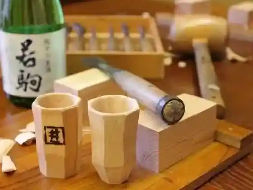
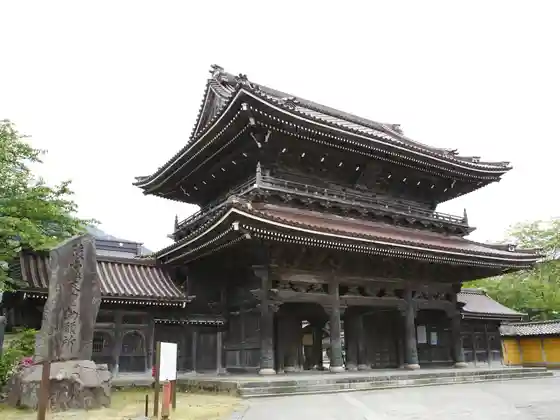

Sekai Isan Gokayama Ainokura Gasshozukuri Shuraku
Nanto, Toyama · 0763-66-2123 · Official / source link
Roadside Station Inami Inami Kibori no Sato So Yu Kan
Nanto, Toyama · 0763-82-5757 · Official / source link

Inami Betsuin Zuisenji
Nanto, Toyama · 0763-82-0004 · Official / source link

Sekai Isan Gokayama Sugenuma Gasshozukuri Shuraku
Nanto, Toyama · 0763-67-3008 · Official / source link
Roadside Station Kamitaira
Nanto, Toyama · 0763-67-3141 · Official / source link
Shingo Ka Yama Onsen Nanto Taira Fureai Onsen Center Yu Raku
Nanto, Toyama · 0763-66-2005 · Official / source link
Roadside Station Fukumitsu Nanto Ichi Fukucha Ya
Nanto, Toyama · 0763-52-4100 · Official / source link
Horin Tera Onsen
Nanto, Toyama · 0763-52-4251 · Official / source link
Zuisenji Monzen Town no Streetscape (Yoka Town Tori)
Nanto, Toyama · 0763-82-2539 · Official / source link
Sakuragaike
Nanto, Toyama · 0763-23-2022 · Official / source link
Gokayama Jun Na Workshop Iwana
Nanto, Toyama · 0763-67-3267 · Official / source link
Munakata Shiko Memorial Museum (Aizen En) (Koi Ame Ga Sai)
Nanto, Toyama · 0763-52-5815 · Official / source link
Dai Maki Onsen (Nanto)
Nanto, Toyama · 0763-82-0363 · Official / source link
Sakuragaike Kua Garden
Nanto, Toyama · 0763-62-8181 · Official / source link
Nuku Mori no Sato
Nanto, Toyama · 0763-58-8008 · Official / source link
Johana Betsuin Yoshinori Tera
Nanto, Toyama · 0763-62-0026 · Official / source link
IOX-AROSA
Nanto, Toyama · 0763-55-1326 · Official / source link
Gokayama Tofu Tofu Workshop Kihei Shoten
Nanto, Toyama · 0763-66-2234 · Official / source link
Bareru Toyama
Nanto, Toyama · 080-4815-1764 · Official / source link
Meiso no Sato
Nanto, Toyama · 080-8043-8583 · Official / source link
Mitsunori Tera
Nanto, Toyama · 0763-52-0943 · Official / source link
Roadside Station Taira Gokayama Washi Village
Nanto, Toyama · 0763-66-2403 · Official / source link
Sushi Tora
Nanto, Toyama · 0763-52-5878 · Official / source link
Katsura Mizumi Bijita Center
Nanto, Toyama · 0763-67-3120 · Official / source link
Mori Nin Sha
Nanto, Toyama · 0763-77-3732 · Official / source link
Takase Shrine
Nanto, Toyama · 0763-82-0932 · Official / source link
Domaine Beau (Torebo)
Nanto, Toyama · 0763-77-4639 · Official / source link
Soba Kaiseki Matsuya
Nanto, Toyama · 0763-82-0047 · Official / source link
Inami Chokoku Sogo Hall
Nanto, Toyama · 0763-82-5158 · Official / source link
Kibori Experience (Roadside Station Inami Inami Kibori no Sato So Yu Kan)
Nanto, Toyama · 0763-82-5757 · Official / source link
Soba no Sato Umaimon Kan Soba Workshop
Nanto, Toyama · 0763-68-2963 · Official / source link
Fukumitsu Art Museum
Nanto, Toyama · 0763-52-7576 · Official / source link
Dozo Gun (Kura Kairo)
Nanto, Toyama · 0763-62-2165 · Official / source link
Johana Biiru
Nanto, Toyama · 0763-62-2283 · Official / source link
Johana Hikiyama Hall
Nanto, Toyama · 0763-62-2165 · Official / source link
Roadside Station Toga (Toga Sutoa)
Nanto, Toyama · 0763-68-2016 · Official / source link
Yukinori Tera
Nanto, Toyama · 0763-67-3302 · Official / source link
Kuni Shitei Juyo Bunkazai Iwase Ie
Nanto, Toyama · 0763-67-3338 · Official / source link
Kawai Ta Onsen Yamada Ie
Nanto, Toyama · 0763-52-0821 · Official / source link
Ninja Hattori Kun Ressha
Nanto, Toyama · 076-251-5655 · Official / source link
Ankyo Tera
Nanto, Toyama · 0763-22-2462 · Official / source link
Kuni Shitei Juyo Bunkazai Murakami Ie
Nanto, Toyama · 0763-66-2711 · Official / source link
Hima Jo Tera Park
Nanto, Toyama · 0763-82-2565 · Official / source link
Kanu Experience (Katsura Mizumi Bijita Center)
Nanto, Toyama · 0763-67-3120 · Official / source link
Hima Jo Tera Koen Campground
Nanto, Toyama · 0763-82-2565 · Official / source link
Gomeigaisha Wakagoma Shuzo Ba
Nanto, Toyama · 0763-82-7373 · Official / source link
Fudo Taki no Reisui
Nanto, Toyama · 0763-23-2037 · Official / source link
Kuroba Onsen
Nanto, Toyama · 0763-67-3741 · Official / source link
Teuchi Chi Soba Gokayama Tofu Ryori Shu Hen Sha
Nanto, Toyama · 0763-66-2744 · Official / source link
Sasara Ya Fukumitsu Main Shop
Nanto, Toyama · 0763-52-6785 · Official / source link
Sushi Megumi
Nanto, Toyama · 0763-62-0330 · Official / source link
Tsuchiyama Gobo Ato to Ko Rui
Nanto, Toyama · Official / source link
Fukumitsu Kazan Onsen
Nanto, Toyama · 0763-52-0500 · Official / source link
Yottekare Johana
Nanto, Toyama · 0763-62-8888 · Official / source link
Gokayama Onsen Gokayama So
Nanto, Toyama · 0763-66-2316 · Official / source link
Gokayama Washi Washi Suki Experience
Nanto, Toyama · 0763-66-2016 · Official / source link
Ainokura Minzoku Kan Dento Sangyo Kan
Nanto, Toyama · 0763-66-2080 · Official / source link
San Warai Rakushu Zo
Nanto, Toyama · 0763-66-2010 · Official / source link
Hakusan Miyamoto Dono
Nanto, Toyama · 0763-66-2468 · Official / source link
Sobadokoro Cha Bo Zu
Nanto, Toyama · 0763-82-7300 · Official / source link
Nanto Engei Botanical Garden Furoraru Park
Nanto, Toyama · 0763-22-8711 · Official / source link
Kitsutsuki Kurabu
Nanto, Toyama · 0763-82-5757 · Official / source link
Nanto Batto Museum
Nanto, Toyama · 0763-52-0576 · Official / source link
L’évo
Nanto, Toyama · 0763-68-2115 · Official / source link
O Yasumi Tokoro Chaya Matsuya
Nanto, Toyama · 0763-66-2631 · Official / source link
Sachi Zushi
Nanto, Toyama · 0763-62-0127 · Official / source link
Inaka Manjuyoshimura Main Shop
Nanto, Toyama · 0763-82-6881 · Official / source link
Usu Nami Mizu
Nanto, Toyama · 0763-82-0104 · Official / source link
Mizoguchi Ume Hana Do
Nanto, Toyama · 0763-62-0034 · Official / source link
Fukumitsu Onsen
Nanto, Toyama · 0763-55-1136 · Official / source link
Ebata Shoten
Nanto, Toyama · 0763-66-2027 · Official / source link
Gokayama Minzoku Kan
Nanto, Toyama · 0763-67-3652 · Official / source link
Inami Hachiman Shrine
Nanto, Toyama · Official / source link
Fukumitsu River Park
Nanto, Toyama · 0763-23-2022 · Official / source link
Kyu Toyama Prefectural Nogaku Kohon Kan Gan Jo Kaku
Nanto, Toyama · 0763-22-2014 · Official / source link
Fukumitsu Joshi Sei Kasumi Sono
Nanto, Toyama · 0763-23-2014 · Official / source link
Gassho Chaya Ainokura Ya
Nanto, Toyama · 0763-66-2815 · Official / source link
Shogawa Kyo no Hito Kitahara So
Nanto, Toyama · 0763-82-3741 · Official / source link
Higashiyama So
Nanto, Toyama · 0763-82-1013 · Official / source link
Katsura Mizumi Oto Campground
Nanto, Toyama · 0763-67-3120 · Official / source link
Gokayama Washi Suki Taiken Kan
Nanto, Toyama · 0763-66-2016 · Official / source link
Washoku Kiku
Nanto, Toyama · 0763-22-4848 · Official / source link
Gokayama Tabe Tokoro Goro Taira
Nanto, Toyama · 0763-67-3502 · Official / source link
Tomoe Tsuka no Matsu
Nanto, Toyama · Official / source link
O Sayo Tsuka
Nanto, Toyama · Official / source link
Matsui Kigyo
Nanto, Toyama · 0763-62-1230 · Official / source link
Narimasa Shuzo KK
Nanto, Toyama · 0763-52-0204 · Official / source link
Jun Na Market (Fuku Village)
Nanto, Toyama · 0763-22-1147 · Official / source link
Minshuku
Nanto, Toyama · 0763-68-2452 · Official / source link
Shio Sho no Kan
Nanto, Toyama · 0763-66-2468 · Official / source link
Shoko Tera no Taishi Zo
Nanto, Toyama · 0763-67-3667 · Official / source link
Fukuno Bunka Sozo Center Heriosu
Nanto, Toyama · 0763-22-1125 · Official / source link
Ko Minka no Yado Okabe
Nanto, Toyama · 0763-82-5229 · Official / source link
Miyage · O Yasumi Tokoro Arai
Nanto, Toyama · 0763-67-3217 · Official / source link
Ikenami Shotaro Fureai Kan
Nanto, Toyama · 0763-82-5666 · Official / source link
Koho Yama Lookout
Nanto, Toyama · Official / source link
Nawagaike Mizubasho Gunsei Chi
Nanto, Toyama · 0763-23-2017 · Official / source link
IOX-AROSA Yama no Terasu
Nanto, Toyama · 0763-55-1326 · Official / source link
Niku Tokoro Hana Ushi
Nanto, Toyama · 0763-22-8790 · Official / source link
Okina Tsuka Kurokami Iori
Nanto, Toyama · 0763-23-2014 · Official / source link
Nanto Johana Dentogeino Kaikan Johana Za
Nanto, Toyama · 0763-62-5050 · Official / source link
Ta Village Man Jo Do
Nanto, Toyama · 0763-62-0124 · Official / source link
Matsu Village Matsu Koe Do
Nanto, Toyama · 0763-52-0103 · Official / source link
Gelateria ZUCCA
Nanto, Toyama · 0763-55-6491 · Official / source link
TSUBAKI HOUSE
Nanto, Toyama · Official / source link
Teuchi Soba Kaya Warai
Nanto, Toyama · 0763-52-5033 · Official / source link
Haruno Shikishoku Do
Nanto, Toyama · 0763-52-0141 · Official / source link
Ishiguro Tane Koji Mise
Nanto, Toyama · 0763-52-0128 · Official / source link
IOX Varuto
Nanto, Toyama · 0763-55-1969 · Official / source link
Gokayama Onsen Akao Kan
Nanto, Toyama · 0763-67-3321 · Official / source link
Shu Yume Ki Raku Kan
Nanto, Toyama · 090-4323-9042 · Official / source link
Asayama Seika Do
Nanto, Toyama · 0763-22-2035 · Official / source link
Higashinaka Ko Washi Kako Seisan Kumiai
Nanto, Toyama · 0763-66-2420 · Official / source link
Unagi Minamisaiwai
Nanto, Toyama · 0763-62-2727 · Official / source link
JOHANARE (Johanare)
Nanto, Toyama · 0763-62-8181 · Official / source link
Toga Geijutsu Park
Nanto, Toyama · 0763-68-2028 · Official / source link
Noji Kumiai Hojin Gokayama Washi
Nanto, Toyama · Official / source link
Yu Yu Land Hanatsubaki
Nanto, Toyama · 0763-64-2288 · Official / source link
Toyama Hoshigaki Shukka Kumiairengokai
Nanto, Toyama · 0763-52-0078 · Official / source link
JA Nanto Kamitaira Yasai Sansai Kako Ba
Nanto, Toyama · 0763-67-3443 · Official / source link
Gokayama Kokumin Kyuyochi Ainokura Campground
Nanto, Toyama · 0763-66-2123 · Official / source link
Guest House Gassho Kazura
Nanto, Toyama · 0763-77-3512 · Official / source link
Matsu Village Kinen Hall
Nanto, Toyama · 0763-52-3022 · Official / source link
Saisho Tera
Nanto, Toyama · 0763-68-2661 · Official / source link
Taira Kyodo Kan
Nanto, Toyama · 0763-66-2403 · Official / source link
Takambo Ski Area
Nanto, Toyama · 0763-67-3766 · Official / source link
Gokayama Seikatsu Kan
Nanto, Toyama · 0763-67-3303 · Official / source link
gonma
Nanto, Toyama · Official / source link
epicerie Cerisier (Episuriisurijie)
Nanto, Toyama · 0763-77-1159 · Official / source link
Kawai Gofuku Mise
Nanto, Toyama · 0763-62-0072 · Official / source link
Bed and Craft TAË
Nanto, Toyama · 0763-77-4138 · Official / source link
Men Tokoro Aji Tokoro Matsuya
Nanto, Toyama · 0763-62-2135 · Official / source link
Gokayama Gassho Village
Nanto, Toyama · 0763-67-3300 · Official / source link
Aji Sabo Togatoga
Nanto, Toyama · 0763-68-2032 · Official / source link
Kawashima Chiku
Nanto, Toyama · Official / source link
Daimon Kawa River Park
Nanto, Toyama · Official / source link
I no Kuchi Tsubaki Kan
Nanto, Toyama · 0763-64-2202 · Official / source link
Johana Dentogeino Teiki Koen Hikiyama Matsuri (Iori Uta) Tomugiya Odori Kansho
Nanto, Toyama · 0763-62-5050 · Official / source link
Gokayama no Aji
Nanto, Toyama · 0763-66-2310 · Official / source link
Nagasaki Ie
Nanto, Toyama · 0763-82-5326 · Official / source link
Tabi Tei Miya Kawa
Nanto, Toyama · 0763-52-1072 · Official / source link
Shimizu Ya
Nanto, Toyama · 0763-52-0544 · Official / source link
Matsushima Shokaku Do
Nanto, Toyama · 0763-62-0039 · Official / source link
Mata E Mon
Nanto, Toyama · 0763-66-2222 · Official / source link
Toga Kokusai Campground
Nanto, Toyama · 0763-23-2019 · Official / source link
Resutoran Tanpopo
Nanto, Toyama · 0763-52-4455 · Official / source link
Hyotan Village
Nanto, Toyama · 0763-52-5556 · Official / source link
Ha Ba no Saka
Nanto, Toyama · Official / source link
Akasofu Mizumi
Nanto, Toyama · 0763-23-2019 · Official / source link
Takase Iseki Park
Nanto, Toyama · 0763-82-5050 · Official / source link
Taira Ski Area
Nanto, Toyama · 0763-66-2911 · Official / source link
Mike Koto Tokoro
Nanto, Toyama · Official / source link
Tenjikan Yusuke
Nanto, Toyama · 0763-66-2555 · Official / source link
Kajiwa Ya
Nanto, Toyama · 0763-52-0066 · Official / source link
Baraeteishoppu Shimaya
Nanto, Toyama · 0763-66-2006 · Official / source link
Yamamotoya Tofu Mise
Nanto, Toyama · 0763-67-3171 · Official / source link
Mansaku
Nanto, Toyama · 0763-67-3107 · Official / source link
Magoza
Nanto, Toyama · 0763-68-2767 · Official / source link
Tsukubane Forest Park
Nanto, Toyama · 0763-62-1252 · Official / source link
Gokayama Ryokan
Nanto, Toyama · 0763-67-3227 · Official / source link
O Shokuji Tokoro
Nanto, Toyama · 0763-67-3647 · Official / source link
Ransoreie
Nanto, Toyama · 0763-62-2977 · Official / source link
Kyodo Gangu Art Museum
Nanto, Toyama · 0763-68-2149 · Official / source link
Kuni Shitei Juyo Bunkazai Hane Uma Ie House
Nanto, Toyama · 076-237-9655 · Official / source link
Gassho Minshuku Yaji Be
Nanto, Toyama · 0763-66-2639 · Official / source link
Sumiyaki Ki Itariambaru LEONE
Nanto, Toyama · 090-4322-0112 · Official / source link
Tera Machi Zakkaten
Nanto, Toyama · Official / source link
Hotel Kappo Tokiwa
Nanto, Toyama · 0763-52-0058 · Official / source link
Miyage Shokuji Tokoro Tenpura Yohachi
Nanto, Toyama · 0763-67-3955 · Official / source link
Kawauchi Ya Kashi Ho
Nanto, Toyama · 0763-82-0402 · Official / source link
Yoitoko Inami
Nanto, Toyama · 0763-82-5666 · Official / source link
Bed and Craft TATEGU-YA
Nanto, Toyama · 0763-77-4138 · Official / source link
Gassho no Yado Shoshichi
Nanto, Toyama · 0763-66-2206 · Official / source link
Guest House YAMASHITA-YA
Nanto, Toyama · 0763-77-3264 · Official / source link
Guest house Ito
Nanto, Toyama · 070-4390-3638 · Official / source link
Fukumitsu Ya Shokudo
Nanto, Toyama · 0763-82-0005 · Official / source link
Yu Flower Garden
Nanto, Toyama · 080-9783-6372 · Official / source link
Gyararii Zui Iori
Nanto, Toyama · 0763-82-6060 · Official / source link
Satoyama no Oberuju Takigi no Oto
Nanto, Toyama · 0763-62-3255 · Official / source link
Minshuku Cho Yo Mon
Nanto, Toyama · 0763-66-2755 · Official / source link
Neko no Kura Workshop
Nanto, Toyama · 0763-66-2678 · Official / source link
Wakiya no Mizu
Nanto, Toyama · 0763-23-2037 · Official / source link
Ta Village Man Jo Do Kigata Kan
Nanto, Toyama · 0763-62-0124 · Official / source link
Ki no Mi
Nanto, Toyama · 070-8463-0619 · Official / source link
Shimeyakko
Nanto, Toyama · 0763-22-2439 · Official / source link
Jun Na Shifuku
Nanto, Toyama · 0763-82-5502 · Official / source link
Sabo Tenohira
Nanto, Toyama · 0763-67-3066 · Official / source link
Sakaue no Osugi
Nanto, Toyama · Official / source link
Gasshozukuri Koteji Gassho Village
Nanto, Toyama · 0763-67-3300 · Official / source link
Bed and Craft
Nanto, Toyama · 0763-77-4138 · Official / source link
Kappa
Nanto, Toyama · 0763-67-3678 · Official / source link
Taira Mauntensukuru
Nanto, Toyama · 0763-66-2403 · Official / source link
Bed and Craft MITU
Nanto, Toyama · 0763-77-4138 · Official / source link
Bed and Craft KIN-NAKA
Nanto, Toyama · 0763-77-4138 · Official / source link
Minshuku Go Yo Mon
Nanto, Toyama · 0763-66-2154 · Official / source link
nomi
Nanto, Toyama · 0763-77-4163 · Official / source link
Daizu Tani Hachiman Shrine no Sogyo Hachiman Shinzo
Nanto, Toyama · Official / source link
Fufu Sugi (Higashi Akao Shuraku)
Nanto, Toyama · Official / source link
Bisutoro Fuzen Iori
Nanto, Toyama · 0763-23-5307 · Official / source link
Mizuguchi Aodama Do
Nanto, Toyama · 0763-52-0512 · Official / source link
Sanwa Shokuhin ” Kaburaya ”
Nanto, Toyama · 0763-52-0284 · Official / source link
Hane Uma Seika
Nanto, Toyama · 0763-66-2536 · Official / source link
Kita Village Shoten
Nanto, Toyama · 0763-66-2628 · Official / source link
O Kitsuke Tokoro Gatsu Ya
Nanto, Toyama · 080-2961-1929 · Official / source link
Fukuno Taun Hotel A Myu
Nanto, Toyama · 0763-22-1414 · Official / source link
Naka no Ya
Nanto, Toyama · 0763-68-2104 · Official / source link
Rojji Mine
Nanto, Toyama · 0763-66-2874 · Official / source link
GOKAYAMA BASE
Nanto, Toyama · 050-3637-3035 · Official / source link
life café cattle
Nanto, Toyama · 0763-82-5878 · Official / source link
Chukaryori Ryu
Nanto, Toyama · 0763-62-1859 · Official / source link
Nakagawa Shokudo
Nanto, Toyama · 0763-22-2212 · Official / source link
Ki Cha (Wa)
Nanto, Toyama · 0763-66-2312 · Official / source link
Kissa Taimu
Nanto, Toyama · 0763-67-3260 · Official / source link
Fufu Taki
Nanto, Toyama · Official / source link
métisse
Nanto, Toyama · 0763-77-3017 · Official / source link
Minshuku Mohe
Nanto, Toyama · 0763-82-5230 · Official / source link
Minshuku Toga no Ie
Nanto, Toyama · 0763-82-3120 · Official / source link
Kiyobe Kura Futsu Ai
Nanto, Toyama · 0763-62-0227 · Official / source link
ANGO Ankyo
Nanto, Toyama · 0763-62-0115 · Official / source link
Ryori Ryokan Man Mizu Kaku
Nanto, Toyama · 0763-62-1717 · Official / source link
Bed and Craft RoKu
Nanto, Toyama · 0763-77-4138 · Official / source link
Gassho Minshuku Nakaya
Nanto, Toyama · 0763-66-2457 · Official / source link
Shiba Ikawa
Nanto, Toyama · 0763-22-1495 · Official / source link
Yaki Tori Izakaya Kanaya
Nanto, Toyama · 0763-22-7055 · Official / source link
O Shokuji Tokoro Sakaide
Nanto, Toyama · 0763-66-2580 · Official / source link
Kita no Ya Shokudo
Nanto, Toyama · 0763-67-3330 · Official / source link
Gyararii Kashi Tei (Masa Kankyo Zokei)
Nanto, Toyama · 0763-22-2874 · Official / source link
Donguri no Kan Kamitaira Kankokaihatsu
Nanto, Toyama · 0763-67-3766 · Official / source link
Suzunitto
Nanto, Toyama · 0763-22-4128 · Official / source link
Katsura Mizumi Koteji
Nanto, Toyama · 0763-67-3120 · Official / source link
Chinpin Do
Nanto, Toyama · 0763-67-3750 · Official / source link
Bed and Craft TenNE
Nanto, Toyama · 0763-77-4138 · Official / source link
Yamagurashi Rashino Guest House Takazuri Kita
Nanto, Toyama · 0763-77-3325 · Official / source link
Bijinesu Hotel Asahi Ichiban Kan
Nanto, Toyama · 0763-22-7070 · Official / source link
Soba Tokoro Kurumi
Nanto, Toyama · 0763-67-3105 · Official / source link
Kokorozashi Yozu
Nanto, Toyama · 0763-82-0276 · Official / source link
Maruike
Nanto, Toyama · 0763-23-2037 · Official / source link
Sakusuke
Nanto, Toyama · 0763-66-2847 · Official / source link
Kitaguchi Shoten
Nanto, Toyama · 0763-66-2002 · Official / source link
Minshuku Yo Shigeru Shiro
Nanto, Toyama · 0763-66-2377 · Official / source link
Kiyohira Kan
Nanto, Toyama · 0763-66-2013 · Official / source link
Teiirumu Kiyohira
Nanto, Toyama · 0763-66-2013 · Official / source link
Umaimon Tokoro Gin Yatsu
Nanto, Toyama · 0763-67-3968 · Official / source link
IOX-AROSA Park Gorufu Ba
Nanto, Toyama · 0763-55-1326 · Official / source link
Michi Village
Nanto, Toyama · 090-3760-8345 · Official / source link
Mukaino Cherry Blossoms
Nanto, Toyama · Official / source link
Kita Bura
Nanto, Toyama · 0763-66-2321 · Official / source link
Furattohausu Asada
Nanto, Toyama · 0763-77-4569 · Official / source link
Maru Beisei Ka
Nanto, Toyama · 0763-52-2525 · Official / source link
Azumadachi Takase
Nanto, Toyama · 0763-82-5828 · Official / source link